Hey, I'm
I build revenue pipeline for MarTech companies that target ecommerce, D2C and consumer brands.
Which means I already spend every day emailing the exact buyer you are trying to sell to. I know what gets answered by that person, because I do it at volume and measure what comes back.
Your website and your offer in, a written plan back inside 24 hours. No call needed to get it.
Why me specifically
A generalist has to learn your market on your budget. Ecommerce and consumer brands are the only market I work in, so I arrive already knowing the verticals, the price bands, the seasonality and the objections.
The market
Beauty, supplements, food and beverage, apparel, home. The brands your platform exists to serve.
What I know about them
Catalogue size, price band, whether they already sell on the channel. I qualify on evidence, not on a job title.
What that saves you
No learning curve on your dime, and no campaign burning your domain while someone works out who to talk to.
Case study 01 · live
Blazi AI sells a creator-commerce service to consumer brands. I run sourcing, qualification, copy, sending infrastructure and the feedback loop. The founder takes the calls. Everything that reaches him came out of the system.
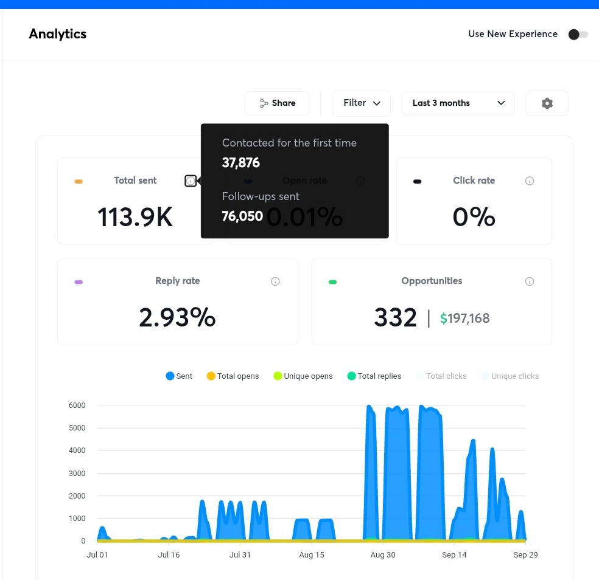
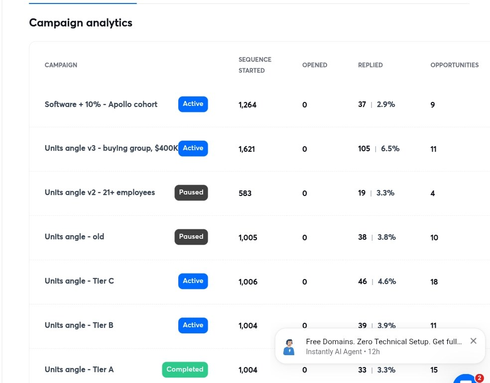
Nobody replies to a service description. The offer had to be something a brand could say yes to without a meeting, so it was built around a number they already care about: units of their own product, moved in a stated window, with the risk carried on our side rather than theirs.
Only once that was settled did the writing start. An offer that needs clever copy to survive is not finished.
The words service, management, concierge and agency appear nowhere. The channel itself is barely mentioned. Every email arrives with one specific product of theirs already chosen, and a number attached to it.
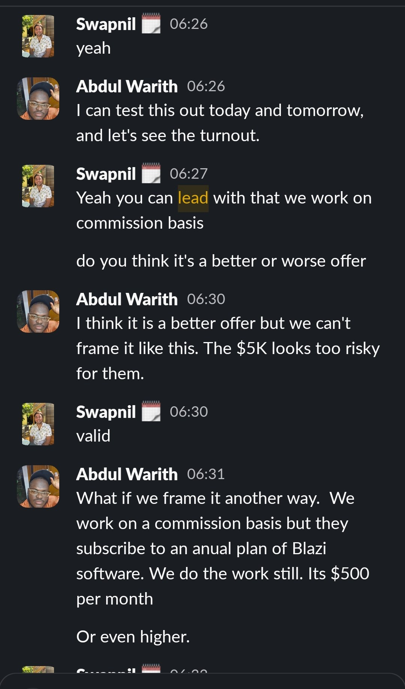
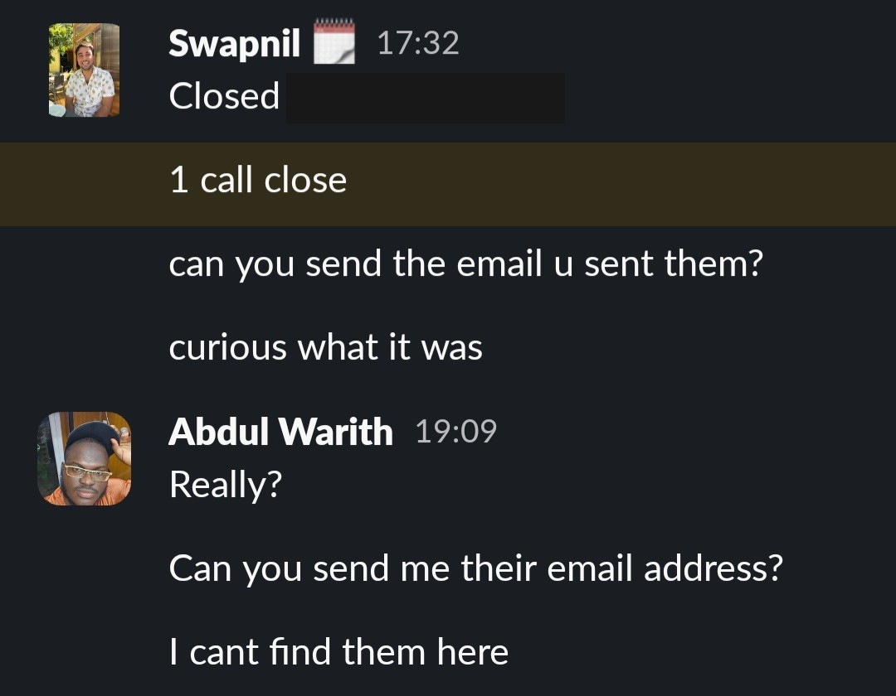
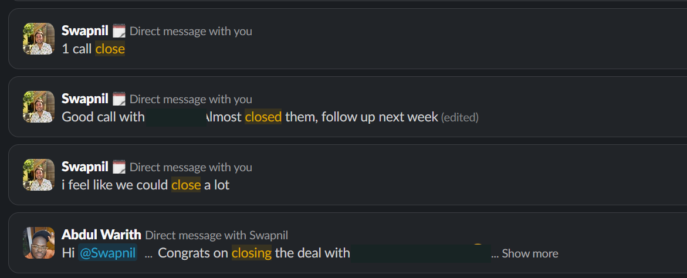
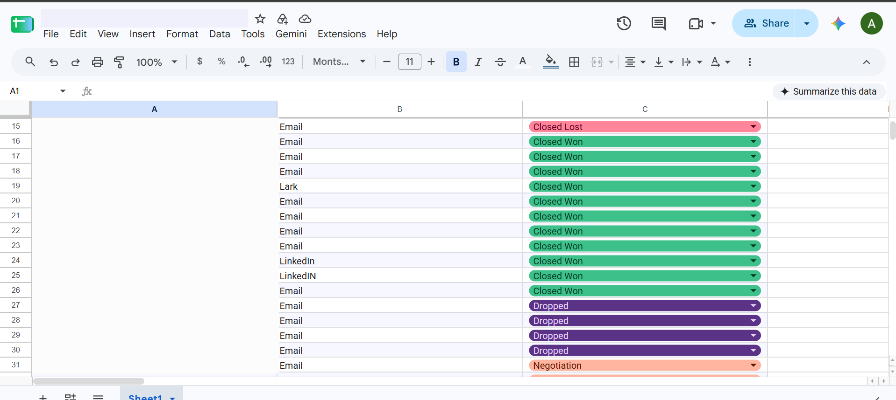
The CRM reported 277 brands as positive. I reconciled the tagging against the raw mail server and found 1,147 had actually replied. Three quarters of the inbound was invisible, which is how one real buyer sat unanswered for 34 days.
Early-stage reporting is usually wrong in a direction nobody checks. Finding that is the job as much as sending is.
How it works
Every stage is a separate step your team can run, re-run and inspect. That is deliberate. I build these to survive my leaving, not to make myself the dependency.
Pull the addressable market from several providers, resolve each company to a real domain, confidence-scored.
Scrape every site and catalogue. Vertical, product type, whether the price sits in the band where units actually move. Most of a list does not deserve an email.
Each surviving company scored and assigned a lane, with the reason written down so it can be argued with later.
Written from that company's own data, with the copy rules enforced in code so a bad line cannot reach a prospect because somebody was in a hurry.
Separate warmed domains, never the client's root. Reply monitoring on a seven-minute loop, inbox health checked daily, both as durable scheduled jobs.
One lead in one stage at a time, with an owner, a next action and a date. Nothing lives in anyone's head.
Before any call the closer gets the brand, their shop state, the product chosen, what we said and what was offered. He walks in knowing exactly what was promised in his name and does no research.
What happened on the call goes back into targeting. The campaign gets better because of the calls, not in spite of them.
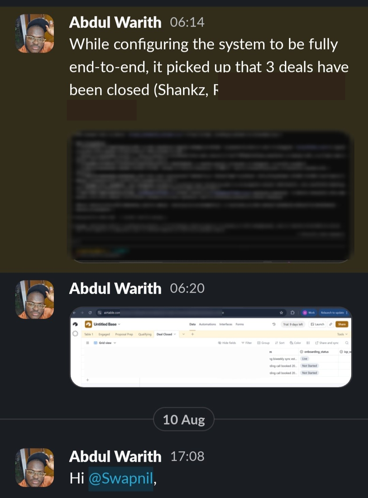
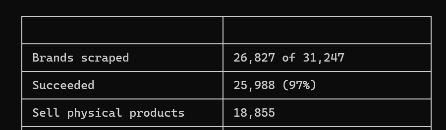
Both ratios reconciled against the sending platform and the raw mail records, not taken off a dashboard.
Case study 02 · the transfer test
Revenue Landscape sells free-trial conversion to B2B SaaS. Not consumer brands, not creator commerce. The point was to find out whether the engine was specific to one vertical or actually transferable.
For every company the system resolved the pricing page, scraped it, and had a model read the tier structure. It then scored them on it and looked for the gap in their own pricing that was suppressing signups.
A product with a 14-day trial and no free tier has a different problem from a freemium one, so it got a different argument. The email named that company's specific conversion leak.
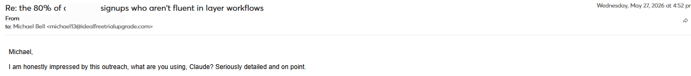
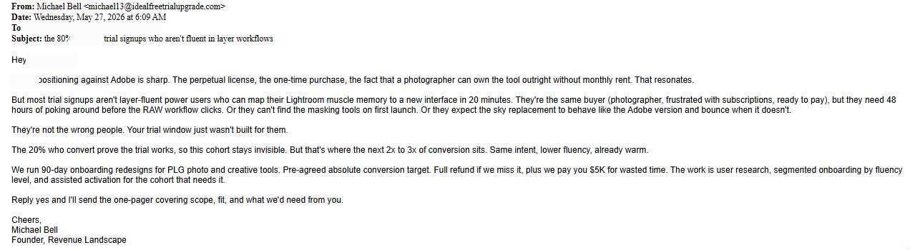
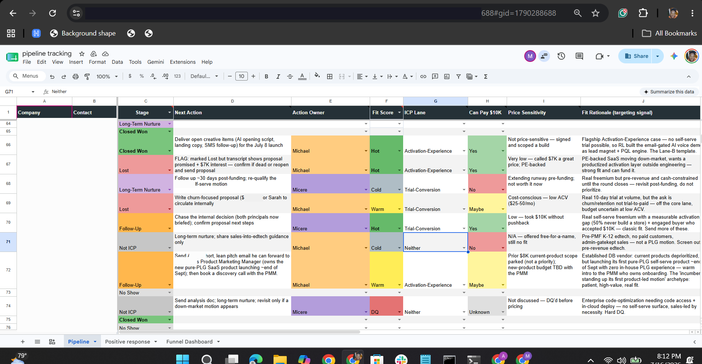
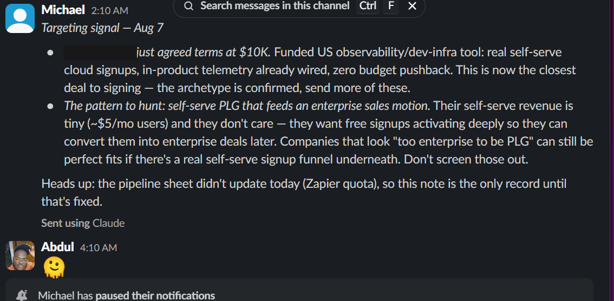
"The archetype is confirmed, send more of these."
— the client, after a deal agreed at $10KFit
Being specific about the no is the only way the yes means anything.
Not a fit
If your buyer is a bank, a hospital or a government department, none of my market knowledge transfers and you should hire someone who has it.
Not a fit
If what you sell is still moving, more email will not help. A sales motion cannot settle while the thing being sold keeps changing. I will say so on the first call rather than three months in.
Not a fit
Booking meetings into a calendar with no one behind it wastes your money and my work. I will ask about your capacity before committing to volume.
Worth asking about
I work on contract, which means I choose the verticals I take. If it matters that I am not running the same system for your closest competitor, that is negotiable. Raise it early.
Free, and specific
Give me your website and what you sell. Within 24 hours you get a written GTM plan for that one offer, built the same way I build one for a client who is paying me.
Not an audit, and not a page of best practices. A plan with real company names in it.
Which slice of ecommerce and consumer brands actually fits this offer, and the evidence I would qualify them on. A filter you can run, not a persona.
The source I would pull it from and roughly how many companies are reachable there right now, so the plan has a ceiling you can see before you fund it.
What the first line opens on for each group, and why that one instead of the obvious one.
Written to a real company off that list, named, built on a specific data point about them. You judge the copy on an actual example rather than on my description of it.
What reply rate it takes to reach the meeting number you want, at your list size. You can tell from that one page whether the channel is worth funding at all.
Why it costs nothing. Reading how I think about your market is faster than me claiming I understand it, and if I have your buyer wrong you will see it on the first page having spent nothing to find out. I take three of these a week, which is how the 24 hours stays true.
Contact
Send me the shape of your buyer and I will tell you honestly whether I can help. If I cannot, I will say that too. Or put thirty minutes in the calendar below and we can do it live.